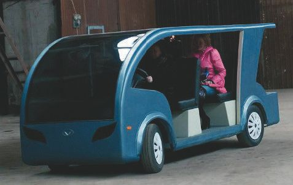
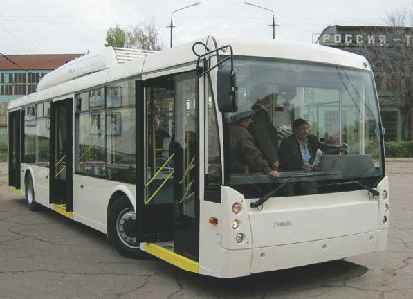
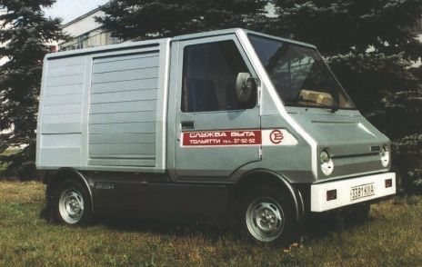

Электромобили и производство в России.
В России небольшими партиями собирается единственный отечественный электромобиль – Lada Ellada. Да, да, читатель, такие тоже имеют место. Кроме того, в окрестностях Астрахани налажен выпуск уникальных в своем роде электромашин – малых электрокаров (рис. 1.5). Размах технологий новых автомобилей не знает границ: аккумуляторами управляет микропроцессорная система контроля.

Рис. 1.5. Малый электрокар российского производства
В фирме «Браво моторе», которая с 2017 года выпускает малые электромобили в Астрахани, уточнили, что электромашины смогут работать без замены аккумуляторов около шести лет – в мире до сих пор не выдумали ничего подобного. К примеру, китайские аккумуляторы держат энергоемкость (с учетом ее постепенного падения) не более двух лет. «Бравомобиль» (как окрестили его создатели) успешно прошел испытание в Астрахани на опытно-экспериментальном предприятии Министерства внутренних дел. «Бравомобиль» – шестиместная машина для мини-путешествий в парках, на набережных, на презентационных мероприятиях. Главное преимущество – экологичность, такие автомобили могут ездить даже в заповедниках.
К Олимпийским играм в Сочи (2014) краснодарское отделение ФГУП «Почта России» получило 100 электромобилей марки Renault двух моделей – Kangoo Z. Е. и Twizy. Европейские цены на них начинаются от 15 и 7 тысяч евро соответственно. Большая часть закупок пришлась на коммерческий Kangoo на электротяге – 70 автомобилей. Остальная часть пришлась на компактный электрокар Twizy. Такой электромобиль проезжает на одной заправке 100 км. Полная зарядка батареи обошлась организации примерно в 60 рублей (22 кВ). Особый интерес – эксплуатация, испытания в зимнее время. Но для этого у нас пока недостаточно статистических данных.
Внимание, важно!
Электромобиль Renault Kangoo Z. Е. стоит в Европе от 15 тысяч евро. Электрический автомобиль Renault Kangoo Z. Е. не выделяет вредных веществ в атмосферу. Об этом говорят расшифровка и перевод аббревиатуры Z. Е. – Zero Emissions. В России цена электрокара – 620 тысяч рублей. Для сравнения, Mitsubishi i-MiEV продается за 1,8 млн рублей. Столь низкая стоимость достигается за счет того, что французы продают машину, а батарея – самая дорогая деталь электрокара – арендуется покупателем. Месяц аренды в Европе обходится в 72 евро. Стоимость аренды АКБ для России пока неизвестна. Цена такой батареи – около 200 тысяч рублей, а некоторые эксперты считают, что в соответствии с приведенными фактическими данными разница в цене между бензиновым и электромобилем окупится за два года.
Еще совсем недавно электромобили в России на дорогах официально не существовали: только 30 марта 2007 года был впервые зарегистрирован в ГИБДД и допущен к участию в дорожном движении электромобиль, переделанный автолюбителем Игорем Корховым из автомобиля с бензиновым двигателем. Конечно, до этого были экспериментальные и самодельные электромобили, но официального разрешения на движение по дорогам общего пользования они не имели.
Сейчас в России насчитывается несколько сотен электромобилей, подавляющее большинство которых ввезено владельцами из-за границы. В качестве эксперимента транспортный налог для электромобилей отменен в Калужской области.
Рассмотрим преимущества электромобиля в России по сравнению с автомобилем с двигателем внутреннего сгорания (ДВС):
• уменьшение вредных выбросов в месте эксплуатации путем перевода их на более высокий уровень (сами электромобили не выделяют вредных веществ, но большая часть электроэнергии производится на тепловых электростанциях, КПД которых выше, чем КПД ДВС);
• низкий уровень шума (электродвигатель работает очень тихо, в основном шум идет от колес движущегося автомобиля и потоков воздуха, обтекающих его);
• электромобиль многократно дешевле в эксплуатации (к тому же электромобиль можно заряжать по ночному тарифу).
Эти плюсы уравновешены следующими недостатками:
• ограниченный запас хода (100–150 км для обычных электромобилей, 200–300 км для класса «люкс»; при использовании отопительных приборов он существенно сокращается);
• длительное время для подзарядки аккумуляторов (7–8 часов при зарядке от бытовой сети, около получаса – на станции экспресс-зарядки);
• высокая стоимость приобретения, основной составляющей которой является цена аккумуляторов.
1.4.1. Какие электромобили продаются в РоссииРынок электротранспорта в России находится в стадии формирования. Первой компанией, открывшей официальные продажи серийных электромобилей в России, стала Mitsubishi, которая привезла электрический компакт I-MiEV в 2011 году. В табл. 1.1 представлены технические характеристики электромобиля Mitsubishi I-MiEV.
Таблица 1.1. Технические характеристики Mitsubishi 1-MiEV
После отмены ввозных пошлин цены на электромобиль Mitsubishi I-MiEV подешевели до 999 тыс. рублей. Это сделало его вполне конкурентоспособным. Некоторые серийные модели электромобилей тоже появились на российском рынке:
• Nissan Leaf;
• Chevrolet Spark EV;
• Mitsubishi Outlander PHEV;
• BMW i3.
Мы будем говорить об их технических характеристиках далее.
1.4.2. Производство электромобилей в РоссииВ 2011 году на выставке «Роснанотехэкспо» был представлен электромобиль Lada Ellada, созданный на основе автомобиля Lada Kalina. В табл. 1.2 представлены технические характеристики электромобиля Lada Ellada. Его внешний вид представлен на рис. 1.3.
Таблица 1.2. Технические характеристики Lada Ellada
Интересна история продаж этого электромобиля в России. Этот электромобиль готовился под серийное производство для служб такси для Ставропольского края. Было выпущено 100 автомобилей, однако руководство Ставропольского края выкупило всего 5 автомобилей. Оставшиеся Lada Ellada были направлены дилерам по себестоимости производства (1 млн рублей), при изначальной заявленной цене 1,2 млн рублей. После отмеченного выше снижения ввозных пошлин судьба проекта неясна, так как он становится неконкурентоспособным по цене. Возможно, переход к более крупной серии позволил бы снизить цену, а привлечение технологий от Nissan, лидера рынка электрокаров, и Renault позволило бы повысить качество российского электромобиля.
Электрический автобус Тролза-52501 (внешний вид – на рис. 1.6) разработан производителем троллейбусов из г. Энгельс (Саратовская область). Он создан на базе низкопольного троллейбуса Тролза-5265, что упрощает его эксплуатацию в парках общественного транспорта. Целью создания электробуса стала задача модернизации транспортной городской сети за счет исключения недостатков как автобусов (вредные выбросы), так и троллейбусов (контактная сеть).
Потребление электробусом электричества снижено на 35–40 %, по сравнению с обычными троллейбусами, благодаря микропроцессорной системе управления тяговым приводом и рекуперативному торможению. Разработчики утверждают, что их электробус почти в 2 раза экономичнее троллейбуса, а автобуса – в 6 раз. Тролза-52501 использует отечественные аккумуляторные батареи производства ООО «Лиотех», которые обеспечивают его работу в течение смены без подзарядки (заряд батарей позволяет преодолевать до 250 км пути). При этом время подзарядки используемых литий-ионных накопителей не превышает 3 часов (от высоковольтной сети).

Рис. 1.6. Электробус Тролза-52501
В табл. 1.3 представлены технические характеристики электроавтобуса Тролза-52501.
Таблица 1.3. Технические характеристики электробуса Тролза-52501
Таблица 1.3. (окончание)
Разумеется, мы отразили в этом разделе только самые ходовые модели, продажи которых доступны всем желающим. Фактически же в России «под заказ» можно приобрести любой электромобиль из продающихся в Европе.
1.4.3. Первый малосерийный российский электромобильИнтересна история попытки создания электромобилей в России под шифром ВАЗ-2102Э, ВАЗ-2702 и ВАЗ-2802. На их примере можно хорошо проследить и общую историю развития электромобилей на Волжском автомобильном советского периода. Вкратце история такова.
В 1974 году на ВАЗе было создано бюро по проектированию электромобилей, состоявшее поначалу из сорока человек. К 1980-му электромобилями на заводе занимался уже целый отдел, насчитывающий более ста человек. Таким образом, история создания электромобиля в СССР имела свои традиции.
Еще в 70-х годах XX века московские власти организовали на 34-м автокомбинате участок опытной эксплуатации развозных электромобилей – УАЗов, РАФов. Там проходили испытания и первые тольяттинские ВАЗ-2102Э. Но ни одна из конструкций электромобилей тех лет не могла по запасу хода и удобству эксплуатации составить конкуренцию бензиновым «монстрам» – во многом потому, что все электромобили были «конвертированными» из серийных, а не разработанными целенаправленно. И Волжский автозавод, набрав необходимый для такой разработки опыт на проектах ВАЗ-2102Э и ВАЗ-2802, выказал намерение решить проблему городского электромобиля. Разработав его с «нуля», с учетом всех тогдашних наработок и производственных возможностей.
На рис. 1.7 представлен отечественный электромобиль ВАЗ-2702.

Рис. 1.7. Отечественный электромобиль ВАЗ-2702
Проект ВАЗ-2702 мог стать не только первым серийным электромобилем, но и первой машиной малотоннажного класса для коммерческих перевозок. Но и этому не суждено было сбыться. В 1988 году, в связи с кризисом перестройки, разработку электромобилей на ВАЗе остановили, хотя производство приводов продолжало кое-как существовать. На этом история создания первого вазовского электромобиля не закончилась, а продолжалась примерно до 1993 года, когда уже окончательно стало ясно, что серийное производство в кризисных экономических условиях невозможно. Подробности об этой печальной отечественной истории можно прочитать в [3].